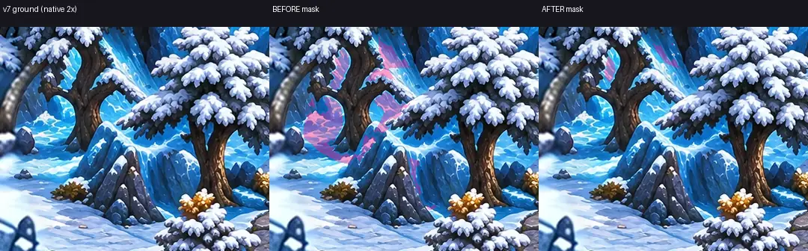
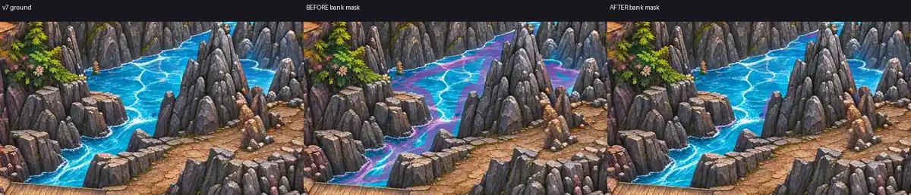
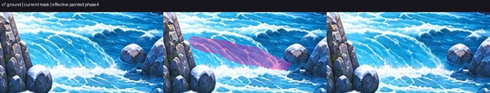
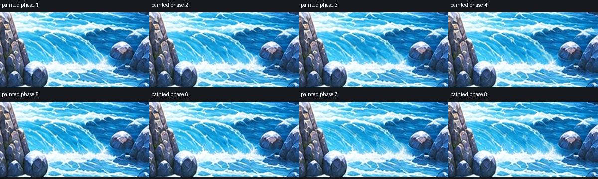
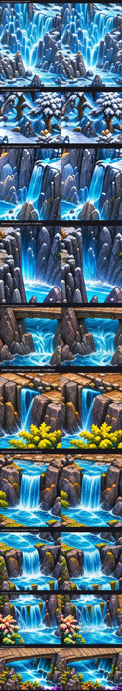
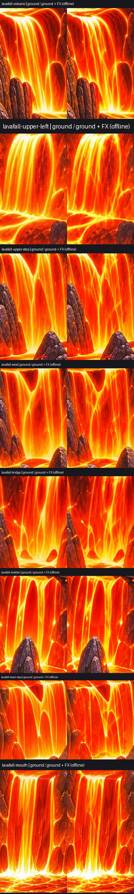
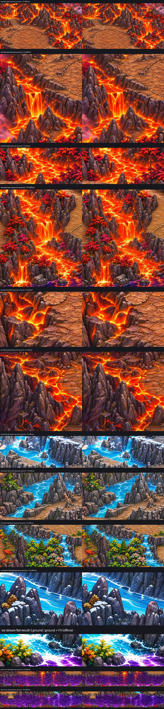

incomplete — summit ขั้นล่างครอบครบตัวอย่าง 528 พิกเซลและมี 8 เฟรมเดิมขยับแล้ว แต่ reference ของขอบ mask, ฝั่งจริง และ particles ยังไม่ครบทั้งแพ็ก ไม่รับรอง QA หรือการรวมเข้าเกม
README และข้อจำกัด · ผลตรวจไฟล์/เฟรม/คลิป · ผลตรวจ mask · รายการงานค้าง




ผล registration · ผลแยกทุก mask: 5/37 มีขอบเขตบน ≤3% · ระยะถึงฝั่งจริง (บางช่วง) · footprint ไอลาวา 2 จุด
ผลตัด mask และ hash · ผลตรวจ coverage · loop review ปัจจุบัน · summit ก่อน/หลัง · east-cliff ก่อน/หลัง
เรนเดอร์ออฟไลน์ 24 fps; decode ครบมุมละ 288 เฟรม มุมประมาณจาก landmark ไม่ใช่ภาพเกมจริง ไม่มี runtime cross-fade
ซ้าย = พื้น v7; ขวา = พื้น + effect เวลา 0.375 วินาที แต่ละจุดเปิดแยกได้ใน pairs/; ภาพพื้น/overlay สำหรับตรวจ mask อยู่ใน boundary/


